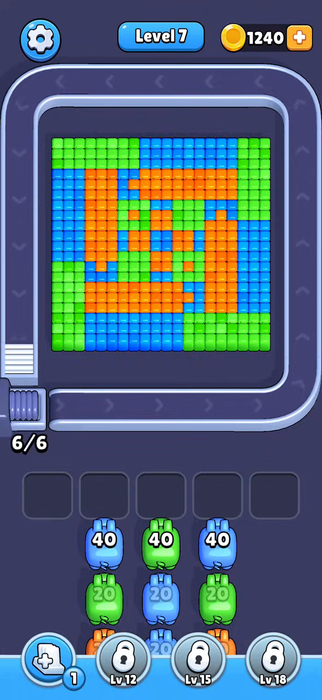
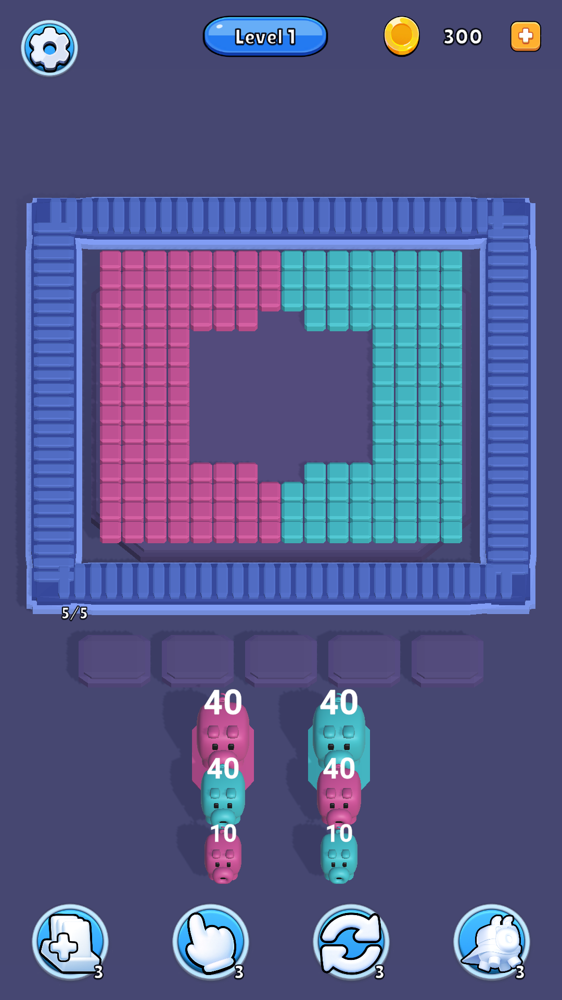
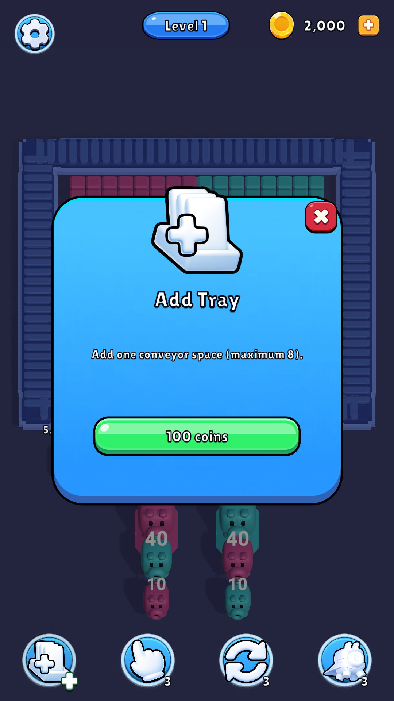
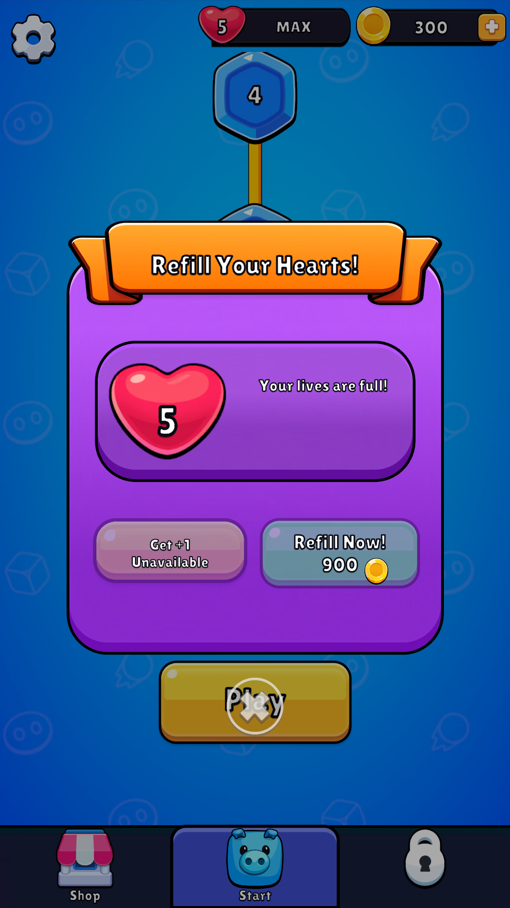
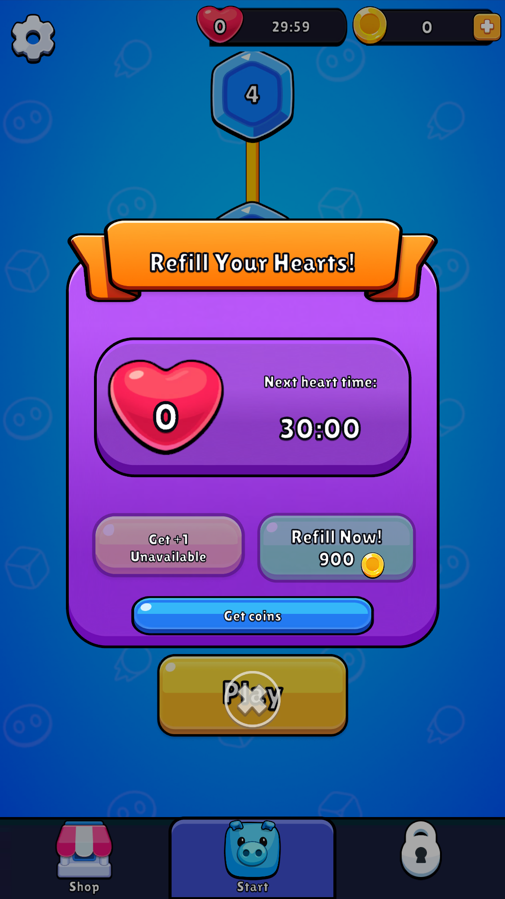
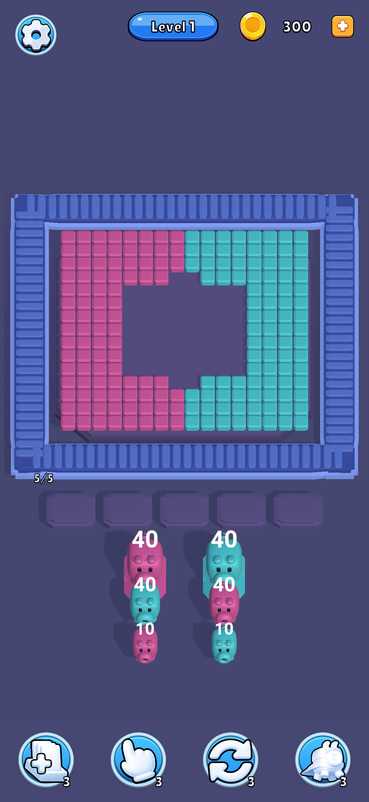

Hồi quy cuối 140/140; 118 file nguồn/import kiểm tra đạt. Kế hoạch hoàn thiện · Gallery ref: 10 nguồn / 10 clip / 24 frame runtime · REA 0.36.3.
Ảnh clone dưới đây là preview URP từ fixture save riêng, không phải Game View hay thiết bị. Bản nguồn trong video MGFTUE có footer 0.32.1(263); video review chưa xác minh build. Các cặp khác level/state chỉ dùng đối chiếu cấu trúc. Game View bổ sung chưa hoàn tất vì ổ C đầy khiến save review không ghi được. Không build player.






Thay đổi và giới hạn · Lịch sử lỗi/khắc phục · Audit prefab. Còn win/fail/continue/target/error UI, native timing/unlock, rank/pass/events/account và provider production; đây là checkpoint client, chưa phải clone hoàn thiện.